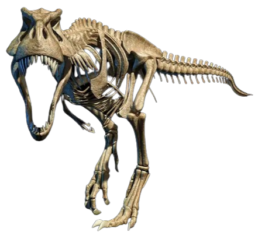
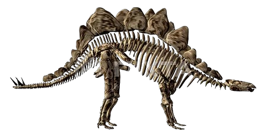
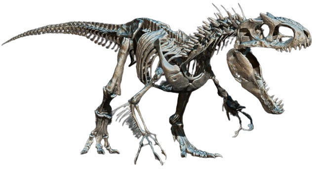
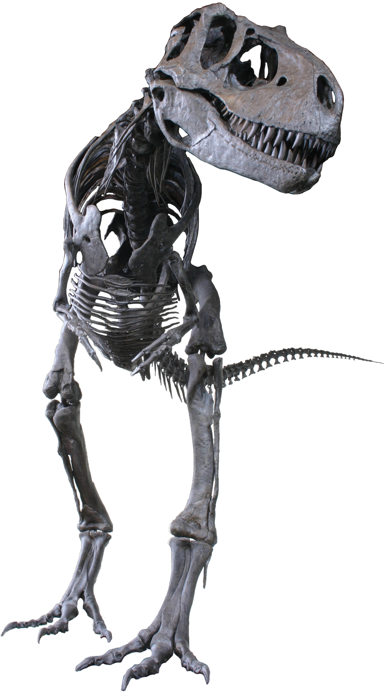
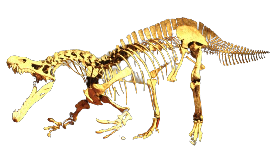
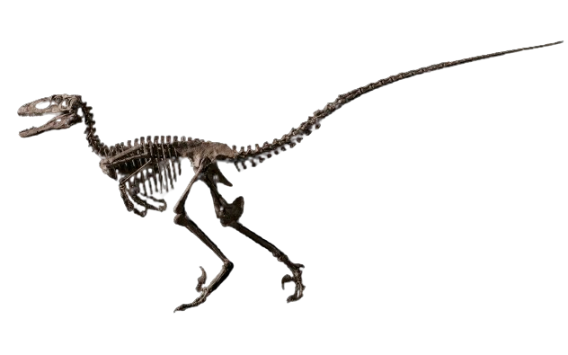
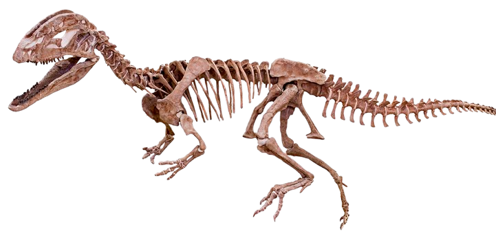
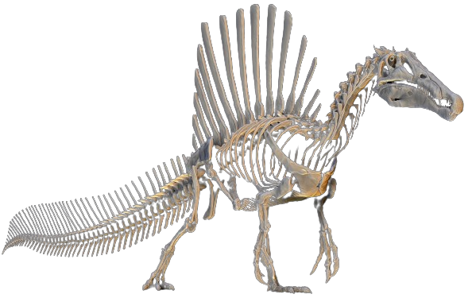
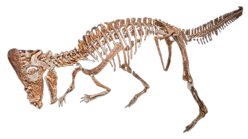
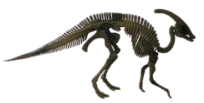

Triceratops Fossil
Triceratops was a large, herbivorous dinosaur that lived during the Late Cretaceous period, approximately 68 to 66 million years ago. With its 3 horns, a parrot-like beak and a large frill that could reach nearly 1 metre (3 feet) across, the Triceratops skull is one of the largest and most striking of any land animal. The horns could have been used to fend off attacks from Tyrannosaurus.
Tyrannosaurus Fossil
Tyrannosaurus rex, commonly known as T. rex, was one of the largest and most fearsome carnivorous dinosaurs that lived during the Late Cretaceous period, approximately 68 to 66 million years ago. Based on fossil specimens, scientists have determined that a Tyrannosaurus rex could be up to 40 feet long and 12 feet high. T. rex is estimated to have weighed between 11,000 and 15,500 pounds (5,000 and 7,000 kilograms) with skin and flesh on its huge bones. That's about as much as the largest African elephant.
Stegosaurus Fossil
Stegosaurus was a herbivorous dinosaur that lived during the Late Jurassic period, around 155 to 150 million years ago. They were large, heavily built, herbivorous quadrupeds with rounded backs, short fore limbs, long hind limbs, and tails held high in the air. Due to their distinctive combination of broad, upright plates and tail tipped with spikes, Stegosaurus is one of the most recognizable kinds of dinosaurs.
Allosaurus Fossil
Allosaurus was a large theropod dinosaur that lived during the Late Jurassic period, approximately 155 to 150 million years ago. Measuring 25-35 feet (7-10 meters) long, Allosaurus was the most common carnivorous dinosaur in Morrison Formation ecosystems. The snout of Allosaurus was narrower than the back part of the skull, which was stoutly built for predation.
Albertosaurus Fossil
Albertosaurus was a theropod dinosaur that lived during the Late Cretaceous period, approximately 70 to 68 million years ago. This dinosaur has been described as a lighter, smaller version of Tyrannosaurus rex. Adults reached up to 30 feet (9 meters) in length. The strong skull and jaws of Albertosaurus held around 80 banana-shaped teeth with thickly rounded serrations.
Baryonyx fossil
Baryonyx is a theropod dinosaur that lived during the Early Cretaceous period, approximately 130 to 125 million years ago. Baryonyx had a large number of finely serrated, conical teeth, with the largest teeth in front. The neck formed an S-shape, and the neural spines of its dorsal vertebrae increased in height from front to back. One elongated neural spine indicates it may have had a hump or ridge along the centre of its back.
Deinonychus Fossil
Deinonychus is a genus of theropod dinosaur that lived during the Early Cretaceous period, around 115 to 108 million years ago. A member of the dromaeosaur group, Deinonychus was bipedal, walking on two legs, as did all theropod dinosaurs. Its principal killing devices were large sicklelike talons 13 cm (5 inches) long on the second toe of each foot. The slender, outstretched tail was enclosed in bundles of bony rods.
Dilophosaurus Fossil
Dilophosaurus was a theropod dinosaur that lived during the Early Jurassic period, around 193 to 190 million years ago. The snout was narrow, and the upper jaw had a gap or kink below the nostril. It had a pair of longitudinal, arched crests on its skull; their complete shape is unknown, but they were probably enlarged by keratin. The mandible was slender and delicate at the front, but deep at the back.
Spinosaurus Fossil
Spinosaurus was a large, carnivorous dinosaur that lived during the Late Cretaceous period, approximately 112 to 93 million years ago. For most of the last century scientists reconstructed Spinosaurus as a completely land-based animal with long hind legs, like Tyrannosaurus and Allosaurus. We now know that Spinosaurus had quite short legs and may have spent a lot of its time living in and around water. It also had a wide, paddle-like tail.
Pachycephalosaurus Fossil
Pachycephalosaurus was a dinosaur that lived during the Late Cretaceous period, approximately 70 to 65 million years ago. It has been estimated that Pachycephalosaurus was about 4.5 metres (14.8 ft) long and weighed about 370–450 kilograms (820–990 lb). Based on other pachycephalosaurids, it probably had a fairly short, thick neck, short arms, a bulky body, long legs, and a heavy tail that was likely held rigid by ossified tendons.
Parasaurolophus Fossil
Parasaurolophus was a herbivorous dinosaur that lived during the Late Cretaceous period, approximately 76 to 73 million years ago. It was a large herbivore that could reach over 9 metres (30 ft) long and weigh over 5 metric tons (5.5 short tons), and were able to move as a biped and a quadruped. Three species are universally recognized: P. walkeri (the type species), P. tubicen, and the short-crested P. cyrtocristatus.